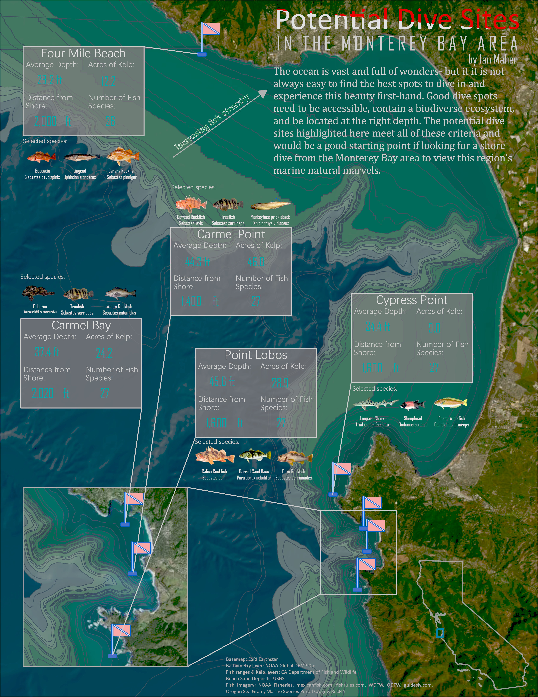

Potential Dive Sites in the Monterey Bay Area
I created this map as part of a final project for my Geospatial Analysis course. I chose this topic because of my own personal interest in scuba diving, as well as a connection with the region. Some of the first maps I became aware of were my uncle's maps of the bathymetry of the Monterey Bay. After determining suitable parameters, including the correct depth, distance from shore, and attractive features, used several datasets to determine the most promising sites to dive in the region. I looked at species diversity in the region by using vector layers supplied by the California Department of Fish & Wildlife, as well as layers detailing local kelp concentrations. I also looked at ocean depth using NOAA's global bathymetric DEM layer. Finally, I used a sand deposit layer from the USGS to find sites that were accessible from the shore.
Skills used: suitability analysis, cartography, combined vector and raster analysis
About Me
My name is Ian Maher. I am a recent graduate of the GIS Certificate Program at Portland Community College. I studied Zoology at Oregon State University for my undergraduate degree. I am passionate about the outdoors and our natural environment. I have many hobbies including scuba diving, coding, making music, hiking, reading, and traveling. I recently moved back into the United States after living abroad for several years and I am ready to begin a career as a GIS specialist. I love making maps and engaging with mapping projects in my free time. Mapping is a powerful tool for visualizing data and discovering patterns, as well as communicating messages effectively. I hope you enjoy some of the maps I have made.